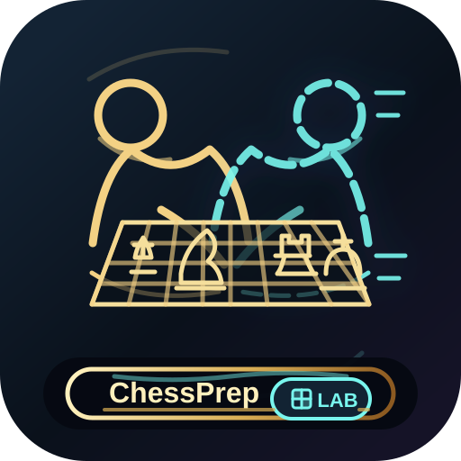
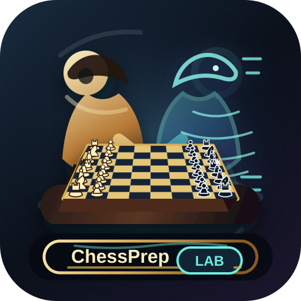
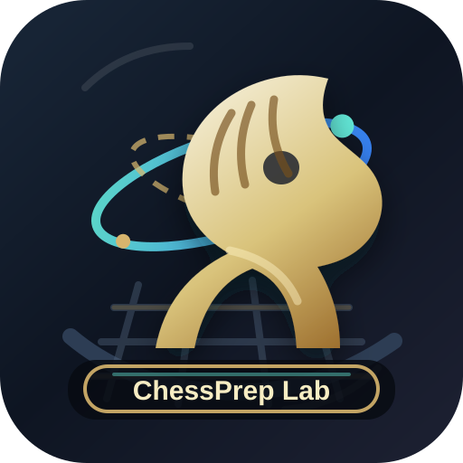
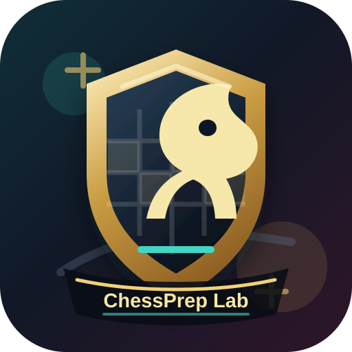
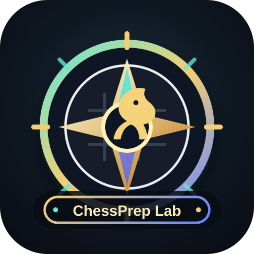
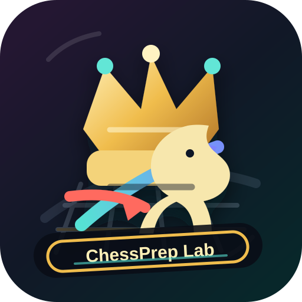

Self Match Line
A simplified line-art version with the same player-versus-self concept.
Simplifiedassets/icons/chessprep-self-match-line.svg
Vector directions for the desktop shortcut, favicon, and app branding.

A simplified line-art version with the same player-versus-self concept.
Simplified
A player prepares across the board from a holographic version of himself.
New Direction
Training lab identity, strongest fit for the current feature set.
Recommended
More formal tournament preparation mark with a stable crest shape.
Tournament
Best for route preparation, branch navigation, and analysis workflow.
Strategic
More aggressive GM-level visual language, built around tactics and ambition.
Bold